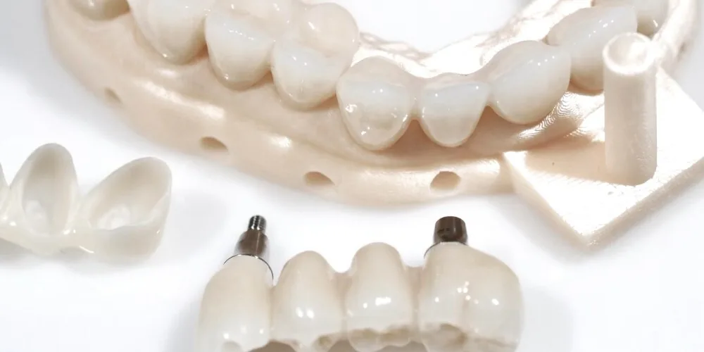

Beljenje zob
Sedaj si lahko posvetlite zobe že s samo enim obiskom v naši ordinaciji.
Naročite se na pregled →
Beli zobje = 1-kratnemu obisku v naši ordinaciji
- Dolgotrajni rezultati
- Neboleča in popolnoma varna tehnologija beljenja
Le kdo si globoko v sebi ne želi Hollywoodskega nasmeha? Sedaj si lahko posvetlite zobe že s samo enim obiskom v naši ordinaciji. Svetleče se beli zobje so simbol lepega nasmeha in lepote.
Zahvaljujoč nenehnemu razvoju in napredku na področju zobozdravstva lahko zdaj svoje zobe posvetlite že z enim obiskom v Zobozdravstvenem centru Diamant, kar pomeni, da je popoln nasmeh dostopnejši kot kadarkoli prej!
V Zobozdravstvenem centru Diamant uporabljamo dve uveljavljeni metodi beljenja:
- Beljenje zob z lučko Fläsh in
- Beljenje zob čez noč z opornicami
Beljenje je neškodljivo in za najmanj denarja naredi največjo spremembo na vašem nasmehu. Ljudje po beljenju dokazano bolj samozavestno pokažejo lepoto svojega nasmeha!
Beljenje zob z lučko Fläsh
Fläsh je profesionalni sistem za beljenje zob, izdelan v Nemčiji in najnovejši izdelek podjetja WHITEsmile, ki temelji na več kot 30 letih izkušenj na področju beljenja zob. Pri metodi beljenja z lučko Fläsh gre za kombinacijo uporabe belilnega gela in posebne lučke, s pomočjo katerih se barvila v zobni sklenini razgradijo s procesom kemične oksidacije. Sistem ima možnost regulacije jakosti svetlobe, kar omogoča prilagoditev intenzivnosti postopka in s tem poskrbi, da med samim postopkom ne pride do skelenja zob.
Postopek v sklopu enega obiska našega centra traja 3-krat (izjemoma lahko tudi 4-krat) po 15 minut. Cena celotnega tretmaja beljenja zob z lučko Fläsh znaša 350 evrov.
Beljenje zob čez noč z opornicami
Pri beljenju zob čez noč z opornicami na podlagi digitalnega posnetka vaših zob izdelamo 3D modele vašega zobovja in opornice za beljenje zob, ki se popolnoma prilegajo zobem in imajo pripravljen prostor za belilo. Vanje nanesete belilni gel Opalescence in jih namestite na zobe.
Beljenje traja 7-20 noči, do želenega odtenka. Cena beljenja zob čez noč z opornicami znaša 300 evrov in vključuje belilo ter opornice. Opornice obdržite in jih lahko uporabite tudi v prihodnje, dokupite samo belilo. V kolikor v prihodnje dokupite samo belilni gel, je cena tega 60 evrov.
Beljenje odmrlih temnih zob
Zobje v katerih odmre živec so ponavadi temnejše, sivkaste barve. Če zob še ni bil endodontsko zdravljen (zdravljenje koreninskih kanalov), potem je potrebno najprej opraviti ta del, nato pa se v zob vstavi vložek iz natrijevega perborata in vodikovega peroksida. Govorimo o notranjem beljenju. Vložek se menjuje tedensko, ponavadi ga zamenjamo dvakrat.
Cena beljenja odmrlega temnega zoba je 90 EUR.
Nato lahko pobelimo še ostale zobe, če pacient želi svetlejše tudi ostale zdrave zobe.
Zakaj se zobje zabarvajo?
Naravna barva zob se razlikuje med posamezniki. Na naravno barvo zob vpliva več dejavnikov, kot so debelina sklenine, položaj zoba, površina zoba, osvetljenost zoba, struktura spodaj ležečega dentina in ostali.
V glavnem na obarvanje zob vplivata dva tipa dejavnikov, in sicer zunanji ter notranji. Med zunanje dejavnike sodijo posameznikov življenjski slog in navade, kot so kajenje in uživanje pijače ali hrane, ki bolj vpliva na obarvanje zob ter ustna higiena.
Med notranje dejavnike pa spadajo predvsem genetska obolenja, jemanje določenih zdravil (tetraciklinov), slabe zalivke, karies in obarvanje zob kot posledica starosti.
Ali beljenje zob vpliva na zdravje zob ali dlesni?
Če se izvaja pravilno, beljenje na splošno zobem ali dlesnim ne škodi. Kljub temu pa lahko pretirano ali nepravilno beljenje povzroči trajno občutljivost zob ali poškodbo dlesni.
Ali beljenje zob povzroča bolečine ali občutljivost?
Nekateri ljudje se lahko po beljenju soočijo z občutljivostjo zob ali dlesni, vendar je to običajno začasna reakcija. Uporaba izdelkov za zmanjšanje občutljivosti in prilagajanje intenzivnosti belilnega postopka lahko pomagata ublažiti te simptome.
Koliko časa trajajo rezultati beljenja?
Rezultati beljenja se lahko razlikujejo – v povprečju lahko trajajo od nekaj mesecev do nekaj let, odvisno od ustne higiene in življenjskega sloga ter navad pacienta, kot so kajenje in uživanje pijače ali hrane, ki lahko obarva zobe.
Ime in priimek*
Telefon*
E-pošta*
Izberite termin
Dopoldan Popoldan Kadarkoli
Izberite lokacijo
Ordinacija Celje - Opekarniška c. 1 Ordinacija Ljubljana - Dunajska c. 154
Vaše težave/sporočilo/vprašanje
Cena prvega pregleda in osnovne RTG analize (ortopan) je 40 EUR.
STRINJAM SE, DA SE MOJI OSEBNI PODATKI UPORABIJO ZA ODGOVOR NA TO SPOROČILO.
Imamo izkušnje, lahko vam pomagamo.
Za informativno ponudbo se naročite na neobvezujoč pregled.
Naročite se na pregled →Podobne storitve
Vse storitve →
Konzervativno in estetsko zobozdravstvo
Širok razpon preventivnega in estetskega zobozdravstva s poudarkom na estetiki.

Implantati
Manjkajoče zobe nadomestimo z zobnimi vsadki, implantati.

All-on-4
Če ste ali boste v kratkem izgubili vse zobe, vam jih metoda All-on-4 povrne v enem dnevu.

Zobna protetika
Snemna in fiksna protetika. CAD-CAM polnokeramične prevleke, estetske luske, delne in totalne proteze.